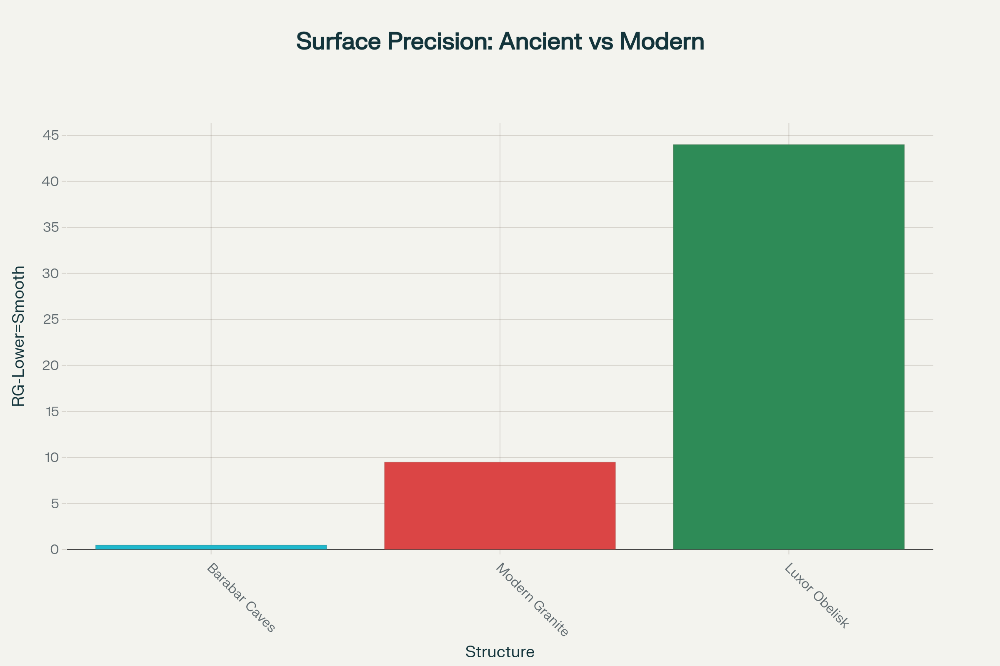
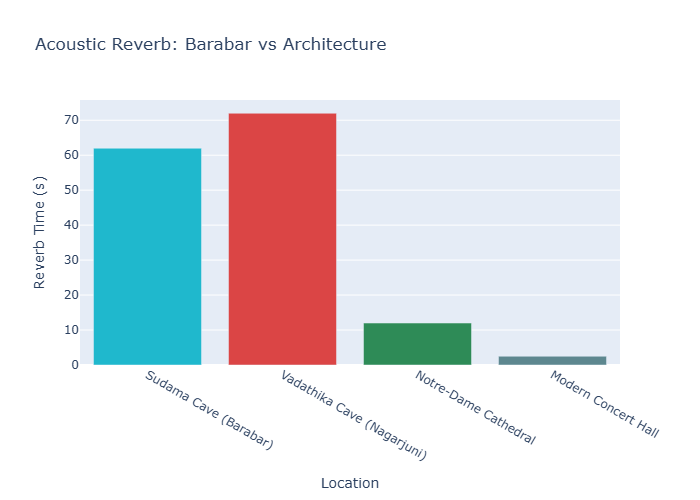

The Barabar Caves
India's Oldest Rock-Cut Caves • 3rd Century BCE
Discover the extraordinary engineering precision of ancient India through these remarkable caves that achieve mirror-finish granite surfaces and 72-second acoustic reverberations - technological feats that challenge our understanding of ancient capabilities.
The Seven Sacred Chambers
Built during the Mauryan Empire under Emperor Ashoka and his grandson Dasharatha, these caves represent the pinnacle of ancient Indian rock-cutting technology.
Gopika Cave
Dasharatha • ~230 BCEThe largest cave with the most extraordinary acoustic properties - achieving 72-second reverberation times that surpass modern concert halls.
Vadathika Cave
Dasharatha • ~230 BCEDemonstrates mathematical precision with perfect 2:3 dimensional ratios, suggesting advanced geometric knowledge.
Vapiyaka Cave
Dasharatha • ~230 BCEFeatures a specific resonant frequency of 34.4 Hz, indicating deliberate acoustic engineering for meditation practices.
Extraordinary Engineering Evidence
Quantitative analysis reveals technological capabilities that challenge our understanding of ancient Indian engineering.
Surface Precision Analysis
The mirror-finish granite surfaces achieve an RG of 0.466 - approximately 20 times smoother than modern engineering can produce on granite. This precision rivals modern optical surfaces.
Acoustic Engineering Analysis
Acoustic properties surpass world-famous architectural spaces. The 72-second reverberation in Gopika Cave exceeds St. Paul's Cathedral and suggests deliberate acoustic engineering for meditation and ritual purposes.
Historical Development Timeline
Sudama Cave Dedicated
Emperor Ashoka dedicates the first cave to Ajivika ascetics, establishing the precedent for rock-cut monasteries.
Major Construction Phase
Lomas Rishi and Visvakarma caves constructed, showcasing advanced architectural techniques and decorative elements.
Karna Chaupar Completion
The most refined cave completed with detailed inscriptions, demonstrating peak craftsmanship.
Nagarjuni Complex
Dasharatha Maurya builds three caves including Gopika with its extraordinary acoustic properties.
Modern Rediscovery
John H. Harington rediscovers the caves, beginning modern archaeological investigation.
Advanced Analysis
3D laser scanning and acoustic studies reveal the extraordinary precision and engineering sophistication.
Archaeological Documentation
High-resolution photography revealing the extraordinary craftsmanship and architectural details.


Research Insights & Implications
The Barabar Caves challenge conventional understanding of ancient technological capabilities and raise fascinating questions about lost knowledge and engineering techniques.
Precision Engineering
The mirror-finish granite surfaces achieve precision levels that exceed modern capabilities. The 0.466 μm roughness suggests unknown polishing techniques or possibly chemical treatments that remain a mystery.
- 20x smoother than modern granite work
- Precision rivals optical instrument surfaces
- Achieved without modern tools or technology
Acoustic Engineering
The deliberate acoustic properties suggest these caves were designed as sophisticated sound environments, possibly for meditation, healing, or ritual purposes that we're only beginning to understand.
- 72-second reverberation times
- Specific resonant frequencies (34.4 Hz)
- Exceeds modern concert hall acoustics
Cultural Significance
Built for the Ajivika sect, these caves represent the intersection of advanced technology and spiritual practice in ancient India, suggesting knowledge systems that integrated science and consciousness.
- Mauryan imperial patronage
- Ajivika ascetic practices
- Intersection of technology and spirituality
Academic Research
Ongoing interdisciplinary research combines archaeology, engineering analysis, and acoustic studies to better understand these remarkable achievements and their implications for ancient Indian civilization.
- 3D laser scanning documentation
- Surface metrology analysis
- Acoustic engineering studies
Academic Documentation
Comprehensive Research Report
Full interdisciplinary analysis combining archaeological, engineering, and acoustic studies.
Download PDFData & Measurements
Complete dataset including surface roughness measurements, acoustic properties, and cave dimensions.
View Data